This project was all about filters, frequencies, and blending images in creative ways. I worked through convolution from scratch, edge detection, Gaussian smoothing, unsharp masking, hybrid images, and multi-resolution blending (the famous oraple). Along the way I included code snippets, qualitative results, and my observations.
I implemented convolution in two ways: first with four nested loops, and then with two.
I also added zero padding so the output had the same size as the input.
After that, I compared my results with scipy.signal.convolve2d to make sure
things matched up. Finally, I applied a 9×9 box filter to a grayscale photo of myself,
and also tested finite difference operators Dx and Dy.
[import numpy as np
def conv2d_four_loops(img: np.ndarray, kernel: np.ndarray) -> np.ndarray:
k = np.flipud(np.fliplr(kernel))
H, W = img.shape
Kh, Kw = k.shape
ph, pw = Kh//2, Kw//2
padded = pad2d(img, ph, pw, 0.0)
out = np.zeros_like(img, dtype=np.float64)
for i in range(H):
for j in range(W):
s = 0.0
for m in range(Kh):
for n in range(Kw):
s += k[m, n] * padded[i + m, j + n]
out[i, j] = s
return out
def conv2d_two_loops(img: np.ndarray, kernel: np.ndarray) -> np.ndarray:
k = np.flipud(np.fliplr(kernel))
H, W = img.shape
Kh, Kw = k.shape
ph, pw = Kh//2, Kw//2
padded = pad2d(img, ph, pw, 0.0)
out = np.zeros_like(img, dtype=np.float64)
for i in range(H):
for j in range(W):
window = padded[i:i+Kh, j:j+Kw]
out[i, j] = np.sum(window * k)
return out
def pad2d(img: np.ndarray, pad_h: int, pad_w: int, value: float = 0.0) -> np.ndarray:
H, W = img.shape
out = np.full((H + 2*pad_h, W + 2*pad_w), value, dtype=img.dtype)
out[pad_h:pad_h+H, pad_w:pad_w+W] = img
return out
]
To implement convolution, I first had to flip my kernel both horizontally and vertically. This is because the mathematical definition of convolution, (I * K)(i, j) = Σ Σ I(i-m, j-n) K(m, n), involves summing over the kernel with flipped indices. My initial four-loop approach was a direct translation of this formula, but it was slow. I optimized this by using NumPy to slice a window from the image and perform a single, fast element-wise multiplication with the kernel, which reduced it to just two loops. I also added zero-padding to keep the output image the same size as the input.
Here are the results of applying the Dx and Dy operators, as well as the box filter, to my grayscale selfie. The box filter smooths out details by a little bit, while Dx and Dy highlight horizontal and vertical edges respectively. It seems that the edges are not super prominent in this photo, I suspect the resolution and lighting play a role.
To compare my methods with scipy.signal.convolve2d, I realized that scipy's function has the best runtime
because it's implemented in C and optimized. My two-loop version was significantly faster than the four-loop one. scipy.signal.convolve2d
also has options for different boundary conditions and modes, which I didn't implement. But for basic convolution with zero padding, my results matched perfectly.
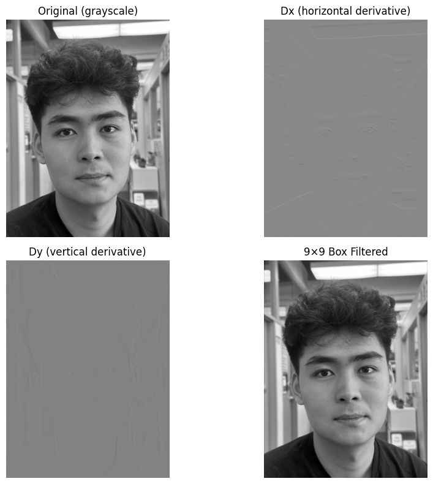
To find edges, I used simple finite difference operators, Dx = [1, 0, -1] and Dy = [[1], [0], [-1]], which are approximations of the partial derivatives in the horizontal and vertical directions. Convolving my image with these gave me the image gradients, Ix and Iy. I then calculated the gradient magnitude using the formula √(Ix² + Iy²). This value is large where the image intensity changes sharply, highlighting the edges. I binarized this magnitude image with a threshold (0.2) to create a clean edge map.
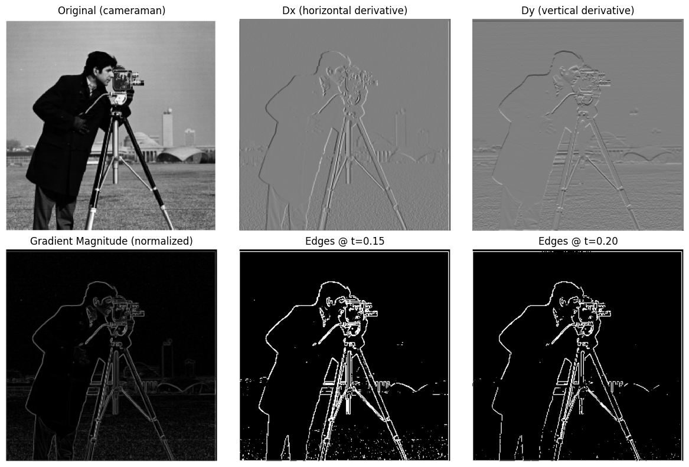
The plain finite difference edges were really noisy. To fix this, I smoothed the image first with a Gaussian filter, then applied Dx/Dy again. I also created actual DoG filters by convolving the Gaussian with Dx and Dy, then used those directly. Both approaches gave me the same result, but with much less noise. I also visualized the DoG filters themselves.
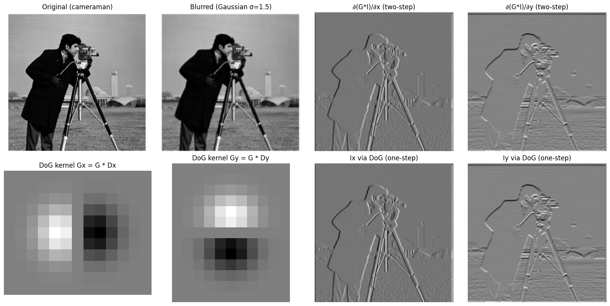
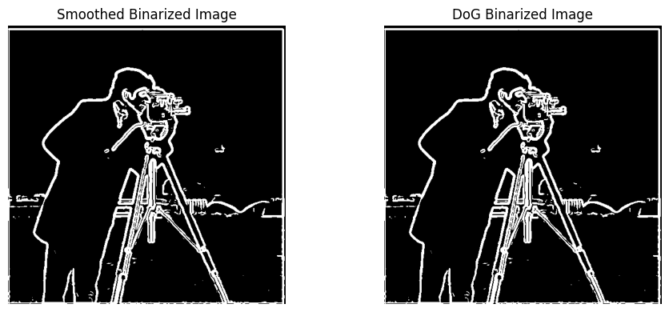
My approach to sharpening uses the "unsharp mask" technique. The core idea is to exaggerate the high-frequency details. I first created a blurred, low-frequency version of the image by applying a Gaussian filter. I then isolated the high-frequency details by subtracting this blurred version from the original. The final step was to add these details back into the original image, scaled by a factor α, according to the formula: I_sharpened = I_original + α * (I_original - I_blurred).
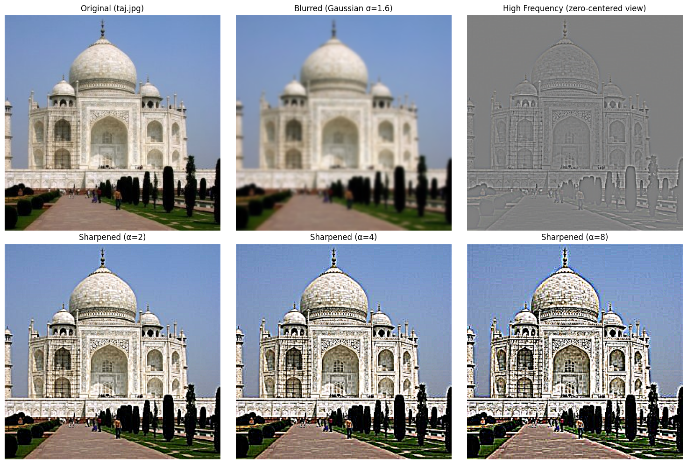
The sharpening worked well to bring out details and edges, especially in the Taj Mahal image. The carved patterns and textures became more pronounced. However, if I sharpened too much (high alpha) or used a very small Gaussian sigma, it introduced artifacts like halos around edges. So there was a balance to strike between enhancing details and keeping the image natural-looking.
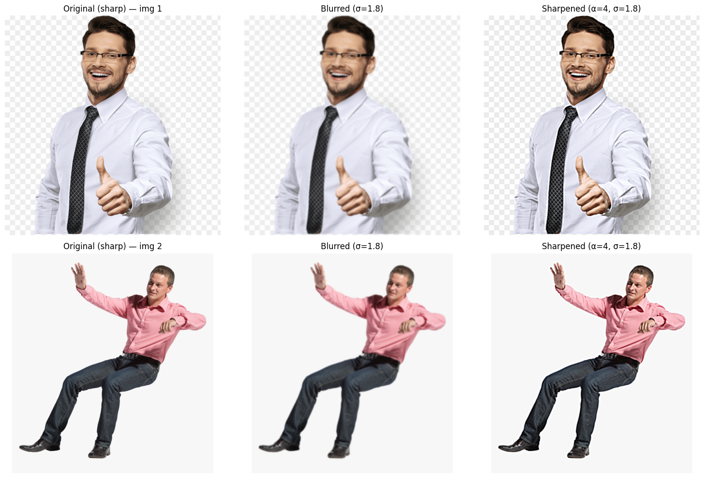
I created hybrid images by combining the high frequencies of one image with the low frequencies of another. For the first image, I created a high-pass filter by subtracting its blurred version from the original (Image1 - blurred(Image1)), which isolates the fine details. For the second image, I applied a Gaussian filter, which acts as a low-pass filter, keeping only its coarse structure. Simply adding these two filtered images together produced the final hybrid. This works because our brains interpret low frequencies from afar and high frequencies up close.
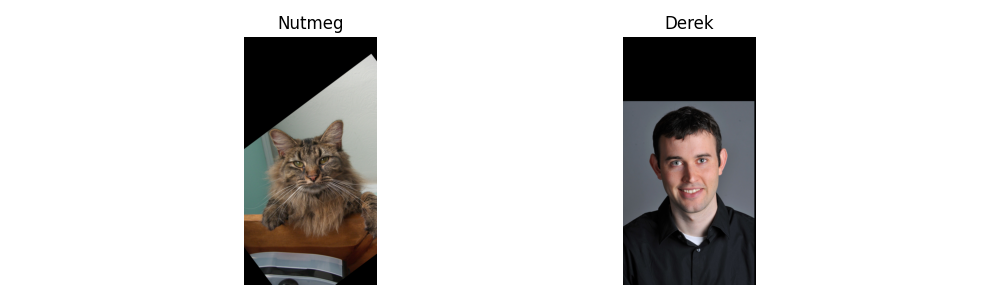
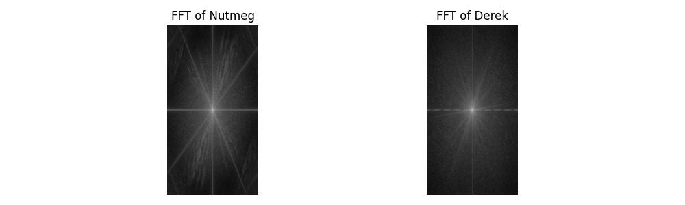
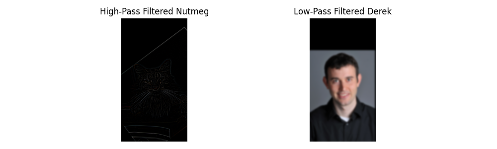
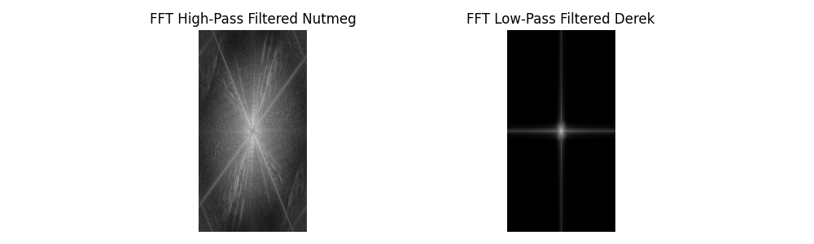
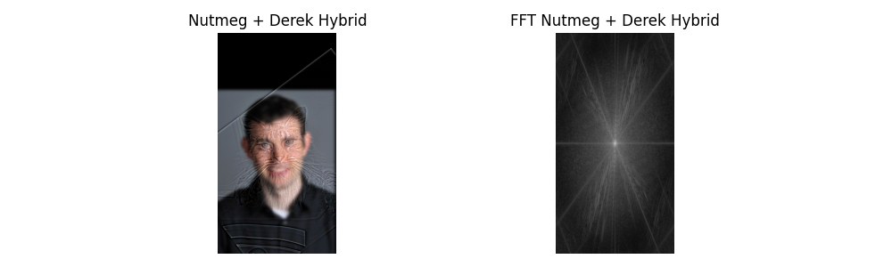
The hybrid images worked really well! Up close, I could clearly see Nutmeg's defined facial features, but as I stepped back, I can see Derek's face. The Fourier visualizations helped me understand how the frequency content of each image contributed to the final result. It was fascinating to see how our perception changes with distance due to the different frequency components.
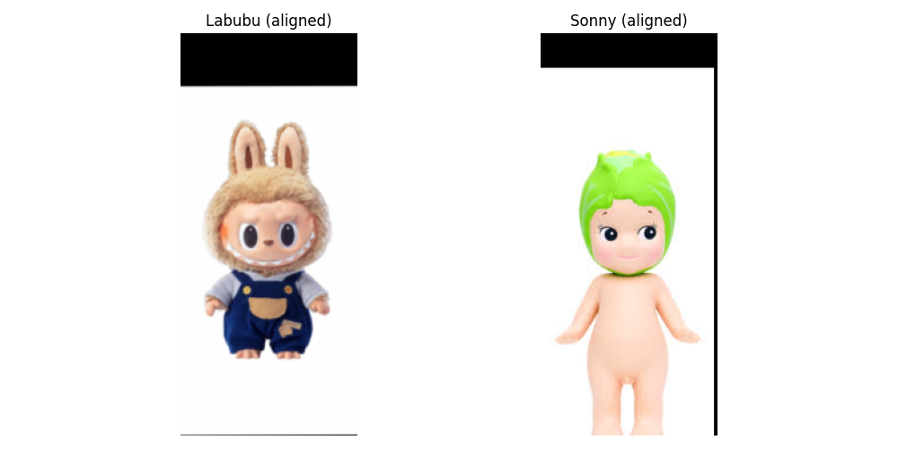
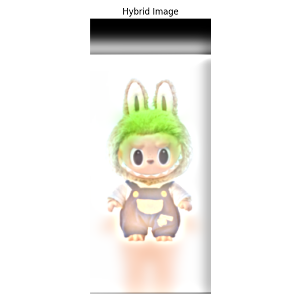
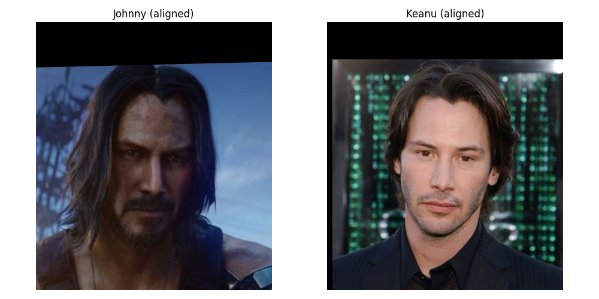
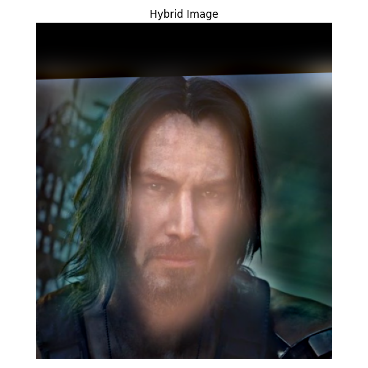
To prepare images for blending, I first built a Gaussian stack. This is created by taking an original image and repeatedly applying a Gaussian blur to it, creating a series of progressively smoother images. Unlike a pyramid, a stack keeps all the images the same size, simply capturing the low-frequency, blurry information at different levels. This process was done separately for both the apple and the orange, resulting in two distinct Gaussian stacks.
Next, I constructed a Laplacian stack from each Gaussian stack. A Laplacian stack captures the high-frequency details—like edges and textures—that are lost between each blur level. Each level is calculated by finding the difference between two adjacent levels in the Gaussian stack. This effectively isolates the image details into different frequency bands. By decomposing the apple and orange into these stacks of details, I set the stage to seamlessly merge them together in the final blending step.
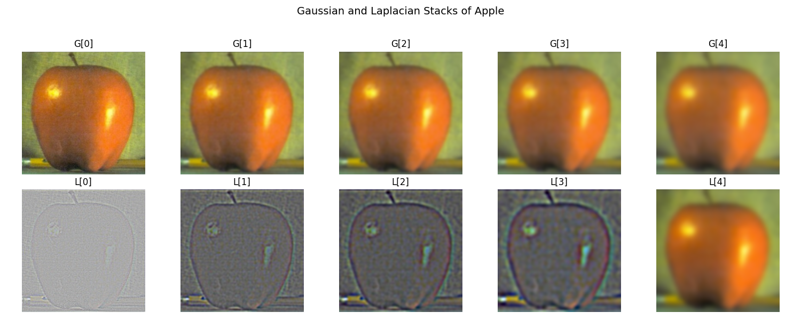
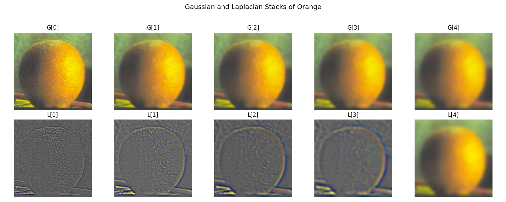
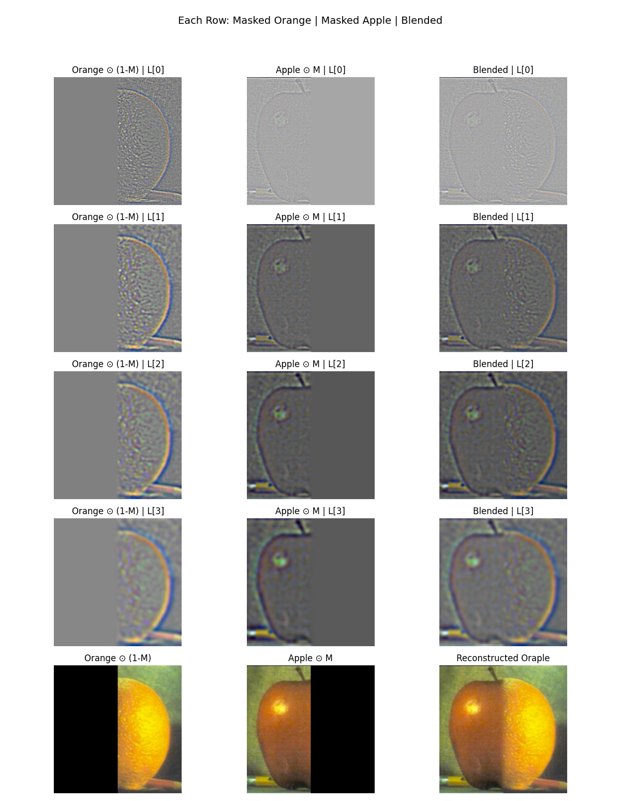
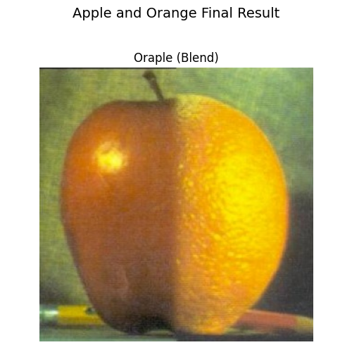
Finally, I blended images using Laplacian stacks + Gaussian mask stacks.
With a simple vertical mask, I got the oraple shown above. The key was to blend the two images' Laplacian stacks at each level using a Gaussian mask stack (a blurred mask). The formula for each new blended level was L_blend = GM_i * L_A + (1 - GM_i) * L_B. By collapsing this new stack, I created a perfectly smooth transition, as the seam was blended across multiple resolutions.Then I experimented with
irregular masks (circular) . This worked way better than just stitching images together
directly, since the seams got smoothed out at multiple frequencies. Here are some of the fun results I got:
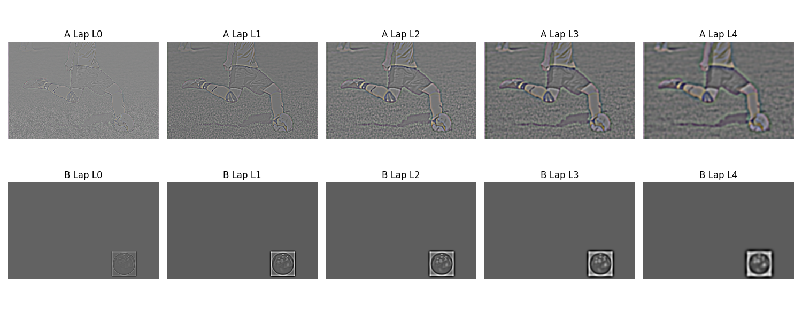
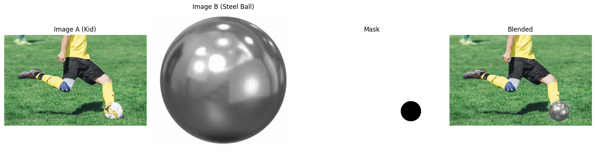
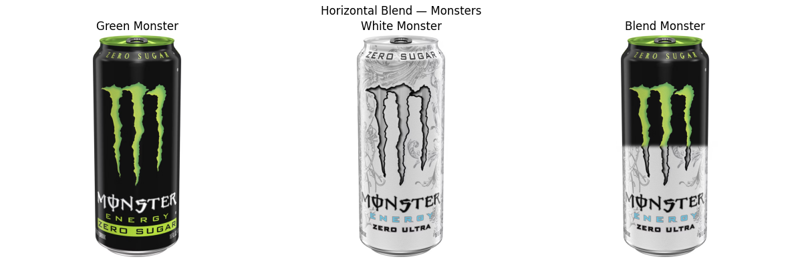
The biggest thing I learned from this project is how frequency content completely changes the way we perceive an image. Simple convolution tricks like smoothing or sharpening boil down to playing with high and low frequencies. And blending at multiple resolutions showed me how powerful these concepts are for making images look seamless.